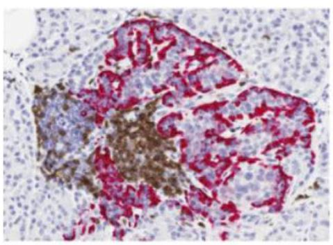
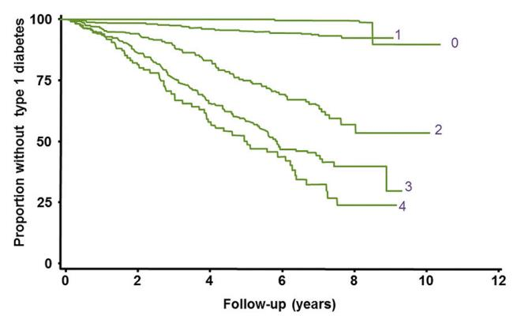
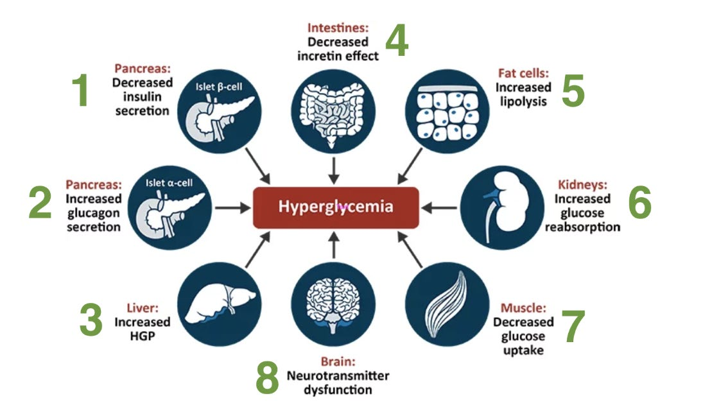
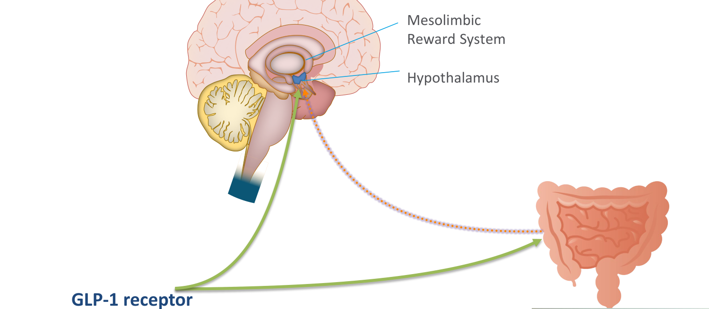

Diabetes Pathophysiology: T1DM & T2DM
Learning Objectives
- Describe the important pathophysiologic mechanisms underlying Type 1 diabetes mellitus (T1DM).
- Describe the important pathophysiologic mechanisms underlying Type 2 diabetes mellitus (T2DM).
Type 1 Diabetes Mellitus
T1DM is immune-mediated destruction of the insulin-producing β-cells in the islets of Langerhans. Histology shows CD3+ T-cell infiltration destroying insulin-producing cells while neighbouring glucagon-producing α-cells are spared.

Genetic susceptibility
Polymorphisms in multiple genes — both within and outside the MHC — are associated with T1DM. It's a polygenic disease, not the result of one gene.
| Family history | Risk of developing T1DM |
|---|---|
| Monozygotic twin has T1DM | 50% |
| Non-monozygotic sibling has T1DM | 5% |
| No family history | 0.4% |
Redondo et al. BMJ 1999;318:698 · Kaprio et al. Diabetologia 1992;35:1060–7
Role of autoantibodies
Autoantibodies are identified in up to 85% of patients with T1DM. Four have been well characterized:
- Insulin / proinsulin
- Glutamic acid decarboxylase (GAD)
- Insulinoma-associated protein 2 (IA-2)
- Zinc transporter (ZnT8)
The more antibodies present, the higher and faster the risk of progressing to clinical T1DM:

Stages of development
T1DM doesn't appear overnight — functional β-cell mass declines through three proposed stages before clinical disease is diagnosed:
| Stage | β-cell autoimmunity | Glycemia | Symptoms |
|---|---|---|---|
| Stage 1 | Present | Normoglycemia | Presymptomatic |
| Stage 2 | Present | Dysglycemia | Presymptomatic |
| Stage 3 | Present | Dysglycemia | Symptomatic (clinical T1DM) |
Insel et al. Diabetes Care 2015;38:1964–74
Quick check
Autoantibodies are present and the fasting glucose (6.5 mmol/L) already falls in the IFG/prediabetes range — dysglycemia without symptoms = Stage 2.
Diagnosis of Diabetes & Prediabetes
The same glycemic thresholds are used to diagnose both types of diabetes:
| Test | Prediabetes | Diabetes |
|---|---|---|
| FPG (mmol/L) | 6.1–6.9 (IFG) | ≥ 7.0 |
| 2-hr PG, 75g OGTT (mmol/L) | 7.8–11.0 (IGT) | ≥ 11.1 |
| A1C | 6.0–6.4% | ≥ 6.5% (adults; not for suspected T1DM) |
| Random PG (mmol/L) | — | ≥ 11.1 |
Fasting = no caloric intake for ≥ 8 hours. Random = any time of day, regardless of time since last meal.
Punthakee et al. Can J Diabetes 2018;42(Suppl 1):S1–S325
Type 2 Diabetes Mellitus
T2DM pathophysiology sits on a spectrum — from predominantly insulin resistance with relative insulin deficiency, to a predominantly insulin secretory defect with insulin resistance (Punthakee et al. Can J Diabetes 2018;42(Suppl 1):S1–S325).
A growing pandemic
T2DM and obesity have risen in parallel worldwide, and both are projected to keep climbing:
| Year | People with T2DM | People with obesity |
|---|---|---|
| 1980 | 108 million | 0.85 billion |
| 2020 | 463 million | 2.00 billion |
| 2045 (projected) | 700 million | 2.45 billion |
Saeedi P, et al. Diabetes Res Clin Pract. 2019;157:107843
The "Ominous Octet"
T2DM used to be taught as a problem of just three organs (muscle, liver, pancreas). DeFronzo's "Ominous Octet" reframes it as eight organs/tissues all converging on hyperglycemia — and each one is a distinct drug target.

1 · Pancreas (β-cell)
- Decreased insulin secretion. ~80% of β-cell function is already lost by the time a patient reaches the prediabetes range.
2 · Pancreas (α-cell)
- Increased glucagon secretion. Multifactorial, partly driven by reduced GLP-1; the liver is also more sensitive to glucagon in diabetes, so the same glucagon level drives more gluconeogenesis.
3 · Liver
- Increased hepatic glucose production. Basal HGP is significantly higher in T2DM and correlates strongly with fasting plasma glucose (r = 0.85).
4 · Intestine
- Decreased incretin effect. GLP-1 falls; GIP actually rises, but the insulin response to GIP is blunted — acquired GIP resistance rather than a simple deficiency.
5 · Fat cells
- Increased lipolysis. Adipocytes resist insulin's antilipolytic effect, raising free fatty acids (FFAs), which stimulate gluconeogenesis and suppress insulin secretion. Once adipocyte storage capacity is exceeded, fat spills into muscle, liver, and β-cells — worsening resistance and secretion respectively.
6 · Kidney
- Increased glucose reabsorption. SGLT2 expression rises with hyperglycemia, reabsorbing more filtered glucose and further potentiating the hyperglycemia.
7 · Muscle
- Decreased glucose uptake. Insulin-stimulated glucose disposal (both whole-body and at the tissue level) is markedly blunted compared to controls.
8 · Brain
- Neurotransmitter/appetite dysfunction. GLP-1 normally acts on the hypothalamus and mesolimbic reward system to increase satiety; this signal is blunted in T2DM — the mechanism GLP-1 receptor agonists exploit for weight loss.
De Fronzo R. Diabetes 2009;58:773–95 (Banting Lecture)
Zooming in on #8 — the brain
GLP-1 acts on the hypothalamus and mesolimbic reward system to increase satiety; GLP-1 receptor agonists exploit this exact gut→brain pathway for weight loss.

Bottom line
Multiple mechanisms across at least eight organs converge to produce dysglycemia in T2DM. Understanding each one is what has driven the expansion of glucose-lowering drug classes — each targets a different node in this diagram.
Quick Check — True or False
Adapted (not reproduced verbatim) from Tayyab S. Khan, MD, FRCP(C), "Pathophysiology of Type 1 Diabetes Mellitus" and "Pathophysiology of Type 2 Diabetes Mellitus" lecture slides, Schulich School of Medicine & Dentistry, Western University.